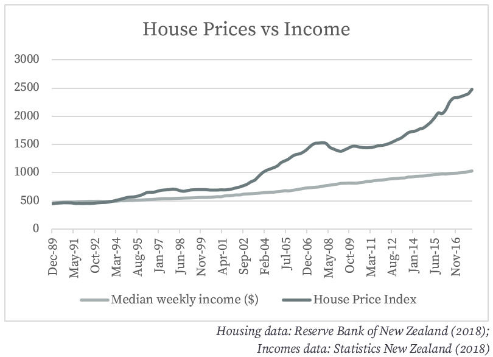

Housing
Housing is absolutely essential to human flourishing. Without stable shelter, it all falls apart. — Matthew Desmond (2016)
That quote from Matthew Desmond, an American sociologist, perfectly illustrates why the housing crisis in Auckland and around the country is so damaging to our nation and its citizens. Without a stable home, it is impossible to hold down a job, for children to take advantage of their schooling, and to enjoy the basics of human dignity.
It is probably entirely unnecessary to outline to a contemporary New Zealand audience the problem in housing: Every single issue of the New Zealand Herald contains at least one column lamenting it – that alone is evidence of the problem. But the graph below could be of use in illustrating the scale of the problem.
Clearly, house prices have significantly diverged from incomes. This crisis means many New Zealanders, including those with university educations, a traditionally privileged group, are unable to access those aforementioned benefits of housing.
The dramatic expansion in housing costs has increased inequality in New Zealand. According to research from the New Zealand Initiative, based on data from the Ministry of Social Development, while nominal income inequality has been relatively stable since the 1980s, after housing costs, inequality has significantly expanded (Wilkinson & Jarem, 2016). This fuels a dog-eats-dog view of the economic system, which encourages detrimental and dangerous populist policy-making – like the Sixth Labour Government’s foreign buyer ban.
The Big Problem
Obviously, we must address the divergence between incomes and house prices. Raising incomes must surely be part of the solution in the long run, but the rapidly rising price of housing is clearly the main accelerant of this crisis. So, what is behind those high prices?
Many blame wealthy foreigners – people like Peter Thiel and Kim Doctom – and New Zealand’s rapidly growing immigrant population. They are clearly wrong to blame non-resident speculators: In late 2017, non-residents made up only 3% of house purchases (Land Information New Zealand, 2018). They may, however, be correct that immigration pushes up housing prices. However, these higher prices and therefore profit margins for builders and developers should simply encourage more houses to be built to make up for this increased demand: We don’t, however, see this in sufficient quantities – this suggests the problem actually lies on the supply-side.
Others say that easy money, fuelled by record-low central bank interest rates, is behind the price rises. This might too be partially behind the price rises, but it does not explain why New Zealand price rises have been significantly more than those elsewhere, given money has been loose (indeed, looser) globally. Again, this suggests the problem is on the supply-side: We aren’t building enough houses to match increased demand.
The problem is a lack of price responsiveness. As rising demand (from both internal and external immigration, particularly) increases the price of houses in Auckland, houses aren’t being built to satisfy this new demand, resulting in a significant and permanent increase in prices.
On one hand, a slovenly response rate is unsurprising. Houses and the required infrastructure are slow to build, especially in a city like Auckland where the geography and volcanic rock underground make tunnelling and complex road development tricky.
The problem with this interpretation is that our building rate is significantly slower than in past times. Whereas in 1974, 38,000 houses were consented to be built, only 30,000 were in 2016. I do concede that we have been gradually been exhausting our easiest-to-build-on land and that building a new home now may involve doing so in a more inconvenient and difficult location. Still, it seems implausible that with the improvement in technology and significantly larger population we have now, we cannot match the same building rate: Environmental and technological factors are not to blame.
This suggests an exogenous factor must be affecting house prices. There must be some sort of interference. To those familiar with the New Zealand construction market, the answer is obvious: The Resource Management Act (RMA).
Under the RMA, local authorities throughout New Zealand, under the guise of protecting the environment, centrally plan where houses may be built. Given the failure of central planning in many other New Zealand industries (including most of the ones Sir Roger Douglas and his Cabinet colleagues privatized and deregulated during the 1980s), is it any surprise that the most failing industry in New Zealand is one of the most regulated?
My assertion that government land use regulation is responsible for New Zealand’s housing woes is backed up by the empirical evidence. According to the Social Policy Evaluation and Research Unit, a now-defunct government think tank, land use regulation is responsible for 56% of the value of the average Auckland house (Lees, 2017). A research note from the Productivity Commission found that the effect of the Auckland Metropolitan Urban Limit, in particular, was significant – but particularly (and detrimentally for inequality concerns), for land priced in the lower quartile or near the median (Zheng, 2013): Lower-quartile land within 2 kilometres of the limit was, on average, 8 times more expensive than that 2 kilometres or less outside the limit.
But this illiberal policy is not only having damaging social effects; it is sure to have quite serious economic consequences. Restrictive land use rules put councils, rather than the market, in charge of how we allocate one of our most valuable and scarce resources: Land. Councils are clearly not the ideal people to decide how we allocate land. Owners, who are familiar with the industry and have, typically, been using the land for many years know far better than council plans set five years ago whether a given section of land would be better used for farmland or housing.
Illiberal planning rules also restricts migration within New Zealand. Many yearn for a return to days past, to New Zealand as a nation of small towns. In reality, however, as cities are better for our economy and environment [1]. They create economies of scale, whereby larger firms can be sustained and achieve significant cost savings by virtue of their size (see Ikea finally announcing it will come to Auckland). They also allow economies in distribution – it is cheaper and more environmentally friendly to deliver one large consignment of a given good, like iPhones, to a city than small consignments to settlements spread across the country. Proximity, too, allows ‘knowledge spillovers’ and for industries to develop: Lots of firms in the same industry together increases the supply of skilled workers. Cities also, presuming they have some semblance of a public transit system, reduce the reliance on polluting private car transport. They also limit the destruction of habitats by containing populations within more limited areas and reduce the need for expensive long-distance infrastructure-building in remote areas. Strict planning laws make it more expensive for individuals to move into the city, even if would make them and the environment better off. In the United States, recent rigorous modelling of land use restrictions found the ‘spatial misallocation’ of labour they caused reduced national GDP by 36% between 1964 and 2009 (Hsieh & Moretti, 2018). Given the stringency of New Zealand’s planning restrictions compared to most localities in the United States (of well-known cities, only San Francisco has prima facie more restrictive planning controls than Auckland), we could expect similarly severe results.
The General Solution
Therefore, I propose a significant liberalisation of New Zealand’s urban development laws.
We should first repeal the Resource Management Act, which is the principal legislative instrument for land use regulation. This should be separated into a Common Resources Act, which will protect natural resources like fresh water and wildlife (discussed in the Environment section), and a Development Act, to manage land use regulation.
This Development Act should be out of the hands of councils. They are incentivized to keep house prices high. This is because their revenue is based on land values (through rates). In addition, voting turnout for local bodies is very low amongst non-homeowners, meaning the homeowner lobby is disproportionately powerful at local government level. Instead, it should be administered in Wellington. This won’t be a difficult task because the bill I propose is very simple.
This Act should repeal the existing local government zoning plans and permit property owners to build whatever they wish to as high as safely possible anywhere and remove the rural-urban boundary. It should return control of noise and such to the common law of nuisance, allowing a common-sense approach to be taken by courts, in the context of the complaint.
The Objections
Many point to the problems of urban sprawl. They reason that a liberal approach to land use would inevitably lead to the spread of cities and, for instance, Auckland enveloping Hamilton. They complain about the environmental damage caused by and infrastructural costs of excessive travel distances. I think this is wrong on multiple counts.
For one, building upwards in the central cities is – in the absence of excessive regulation – often cheaper and, certainly, more attractive to young professionals, because it is nearer to their social and commercial centres. This suggests that an increase in height could be a more likely outcome than a move out.
In any case, with a more user-pays model of infrastructure pricing (which I strongly support and will outline in the Infrastructure section), we could disincentivize building too far out of town and have those who do pay the public costs thereof. The environmental concerns are overblown anyhow: Fuel companies are required, under the Emissions Trading Scheme, to take account of the carbon emissions from downstream fuel usage and I support a more comprehensive and intelligent communal resource management system to replace the RMA (as I shall detail in the Environment section).
More broadly, a significant problem with a liberalized planning system is its interaction with other public services. Critics contest that allowing people to build wherever they wish makes planning government investment, for instance in schools, hospitals, and roads, very difficult. This has argument has some merit.
In reply, it is useful to note that the same complaint could not significantly be made of supermarkets and other privately-provided services. This is because the increased (and anticipated) demand for these services will encourage firms to move in to seize more profits – the price mechanism in action. In addition, developers often seek to ensure such infrastructure is already present, to increase the value of the homes they are building. This is particularly true in a post-liberalization world, where building to match such unfilled demand is far faster, easier, and cheaper. Many of the policy proposals of this book centre on getting the price mechanism to operate in the public services. If such reforms are also conducted, we can rely on the same processes to address most of these problems.
Another complaint some might make is that it will lead to ugly, unplanned, blighted communities. The simple counter-argument is to point to the many beautiful communities which have been built without town planning. Remuera and the old homes of Mt Eden, for instance, were all built before the time of town planning. Most of the picturesque villages of small-town England predate their Town and Country Planning Act by centuries. It is not in the interest of landowners to make purposefully ugly or purposefully inconsistent homes – their resale values would not be as high. Secondly, if a group of neighbours, or one neighbour, found a property particularly objectionable, they could well organise together and pay the landowner to change the design[2]. Thirdly, the common law is well-suited to these sorts of problems. Developers can, and do, place restrictive covenants on the title of land they sell, ensuring higher property values for all householders by maintaining a consistent architectural style on the land. A similar rationale can be applied when one property owner has valuable views he wishes to preserve. In a system of clear property rights, like the one outlined in the Development Act, he could pay the landowner below him to place a covenant on his land to prevent it being built up – this transaction would only take place if the value of the views exceeded that of the possible expansion of the other house.
The biggest complaint, however, surrounds the trade-off between the property rights of homeowners and their neighbours. Building on one’s own land is clearly within the rights of a property owner. However, where does one’s right to build stop and one’s neighbour’s right to sunlight begin? The old Oliver Wendell Jones, Jr. maxim of “your right to swing your arms ends where my face begins” doesn’t seem to apply in any clear-cut way here. Thus, it is a question of legitimately contestable public policy, and ends up becoming a test of a jurisdiction’s relative concern for incumbent homeowners (who benefit from the maintenance of status-quo height buildings and prices) and those seeking housing (who want more built, including upwards in central suburbs, no matter the effect on sunlight). To me, the answer of whom we should prefer seems obvious. Surely, we should seek for public policy – when the ‘right’ solution is ambiguous – to be in the long-term interests of the poorest. How are they served by the maintenance of the views in Remuera households? It is unclear, but the benefit to them of a dramatic expansion in housing supply is clear and immediate: longer house prices and a better standard of living.
The argument some – including ideological allies of mine – might make is that such an ex post facto change of the property right in favour of development and away from conservation amounts to an expropriation of existing householders. They could argue that such an ‘expropriation’, in addition to being morally wrong, would undermine confidence in the system of property rights in New Zealand and deter foreign investment here.
In the first place, I would contest the extent to which this change could be considered an expropriation for moral purposes. This is a removal of an arbitrary property right, granted by government and with no basis in so-called natural law. Indeed, its replacement – a presumption in favour of development – is probably more compatible with ‘natural law’. After all, the original principle of the English common law was Cuius est solum, eius est usque ad coelum et ad inferos: Landowners were the owners of everything above their plot to the heavens and below to hell and therefore, could build whatever they pleased. On a moral basis, if one considers ‘natural’ law to be the arbiter thereof, this policy could then be a correction.
In the second case, I am sure that, so long as proper process was followed in making the change, foreign investors would not be scared off. Indeed, this is an ex-post change to a property right. But, crucially, it is only a change to arbitrary rights created in land. Investors are clearly able to distinguish between such property rights and those they hold, for instance, in capital machinery. The only foreign investment this may deter is in land-banking, which does not significantly add to New Zealand’s productive potential. I am fine with deterring it.
My third response to this contention is to posit that it is really a non-problem. Tools at common law, like caveats on property titles, make it entirely possible for owners to limit the use of their land into the future, in exchange for a lower sale price (because future buyers can use the land for less), restoring those very same property rights that existed before. Now, however, they would required to pay for the privilege. As discussed above, if a neighbour valued his view more than the market valued the flexibility to build on that section, he could pay the owner of it to caveat his land to prevent his view from being built out. Therefore, where is it was ‘efficient’ to limit building on a given section, such limits could be taken out.
Another criticism is contingent on this policy lowering house prices significantly. This is far from unlikely – as the Superu/Lee report made clear, the regulations I would abolish have driven up the price of housing substantially. Such a price decrease, some suggest, would have significant and negative impacts on the stability of New Zealand’s financial sector, because loans backed by homes are a significant portion of the capital of New Zealand banks, and on the financial situation of many New Zealanders. I would contest this criticism on multiple grounds.
Firstly, a rapid decline in house prices is probably unlikely. Although speculation could make the fall occur faster, the full adjustment process in the market would take a few years at least. There is a significant backlog of houses that must be built and, even with this and the other policies I discuss next, houses take time to build.
Secondly, it is implausible that even if such a dramatic price fall did occur, it would have such severe stability impacts. The prudential regulation of the Reserve Bank (RBNZ) – for instance, through loan-to-value ratio (LVR) requirements which limit low-deposit lending - and the generally conservative approach of the Big Four Australian banks have meant that housing exposure has been managed relatively well. A 2017 stress test by the RBNZ (Lilly, 2018) found that the four banks were well-able to deal with a 35% collapse in residential house prices (at the same time as many other severe economic conditions, including a significant downturn in dairy and tourism and a quick rise in unemployment). This suggests there is little to be concerned about on the financial stability front.
However, the concerns about individual New Zealanders are probably more merited. Many New Zealanders have not saved for their retirement in traditional vehicles like shares and bonds but rather by paying down their mortgages[3]. Many, particularly in Auckland, also hold loans issued before or in exemption from the loan-to-value ratio (LVR) restrictions which, with a significant fall in prices, could make them fall into negative equity. A significant fall in house prices could therefore impact these people quite pointedly. However, this impact would only be pointed if they wished to exit their house and cash out their investment in it. They would continue to be able to live in their house without a mortgage. Lower house prices too would help those people in finding cheaper housing once they had cashed out their investment in their more expensive house.
In general, a more liberal approach to land-use regulation would significantly improve the ability of our housing market to respond to future demand. It would reduce the problems of poverty and inequality caused by the current housing crisis. In addition, it would significantly improve productivity – allowing businesses and housing to be situated where it is most efficient rather than where council plans allow them to be.
Other Changes
Land use reform is the most vital change we could make but other areas of the housing market do need reform. Despite land accounting for 60% of the cost of the average Auckland home, construction sector costs [4] are important in driving up prices because they have increased at a rate far surpassing inflation. So too are the incentive structures created by the local government tax system. The latter is covered in the later Taxation chapter.
Material Costs
Building material costs in New Zealand are significantly higher than in the rest of the world. Somewhat higher prices are to be expected, given we are subject to the dual tyrannies of distance and a small population, but the market is structured in such a way to make competition difficult, thereby keeping prices unnaturally high.
As a small, distant market, New Zealand is quite an unattractive option for firms looking to expand. If we want competition in our markets, we must reduce any artificial barriers to entry, because the natural barriers are high enough. In building materials, these artificial barriers are generally building materials regulation.
We have an independent building materials certification process which is very costly for overseas and new firms to undertake – meaning they are less likely to join our market and provide natural competition to the incumbents.
Instead, we should recognize the expertise of foreign regulators. Building authorities in Japan and the West Coast of the United States are very experienced with regulating materials for coastal and seismically-active environments very similar to ours. We should trust them and allow, by default all building materials which have been approved for use in those jurisdictions with similar conditions to ours and quality regulatory regimes. Of course, we should retain a domestic supervisory capability to ensure we can approve New Zealand-developed innovations and remove consent for those materials which have been flawed in our conditions.
The greatest objections to this policy will probably come from the domestic incumbents. Such a policy would allow competitors to emerge and break their duopoly. They would possibly complain of job losses. We can be assured, however, that the benefits accruing to each homeowner would sum to far greater than the losses to the incumbents – this is the basic fact of competition.
Some, however, may also question the expertise of the foreign inspectors. This seems to me a trifle arrogant: As custodians of far larger markets, they are probably far more experienced with consenting innovative and diverse products than our own regime, whose track record was significantly damaged by the leaky-homes saga.
A policy of overseas regulation recognition would dramatically lower entry costs for competitors to Fletcher’s and Winstone and allow competition to emerge far easier and prices to fall, at no cost to safety.
Conclusions
Some will tell you that the housing crisis is a market failure. This is fundamentally wrong: The failure in the market for housing is one of government overregulation and mismanagement. With less distortionary policies and more choice, we can allow building to occur, we can return to housing sanity.
Policy Recommendations
- Remove council control of development policy
- Abolish zoning policy and allow all development, unless it specifically creates a nuisance at common law
- Automatically allow building materials permitted by strong regulatory jurisdictions with similar environments to be used in New Zealand
[1] See Mario Polèse’s book, The Wealth and Poverty of Regions: Why Cities Matter, for his discussion of the “seven pillars of agglomeration” (2010, pp. 33-48).
[2] In Coase (1960)’s aforementioned paper on bargaining of this sort, he proposes two common issues which make reaching efficient solutions difficult: 1) the presence of significant transaction costs; and 2) the lack of clearly defined property rights. Neither of those is significant in this situation. On transaction costs : Sure, the costs of negotiation might be high – lawyers fees, for instance. But when taken in context, considering the value of the property being discussed, they would be relatively negligible. The property rights concern is mitigated by the new Development Act, which would make it clear that the property right lies with the landowner.
[3] This has damaging productivity effects, as I shall address in the Retirement section.
[4] In this section, I only focus on material costs. I shall address the labour problems faced by the building and trades industries later in the Education and Immigration sections.